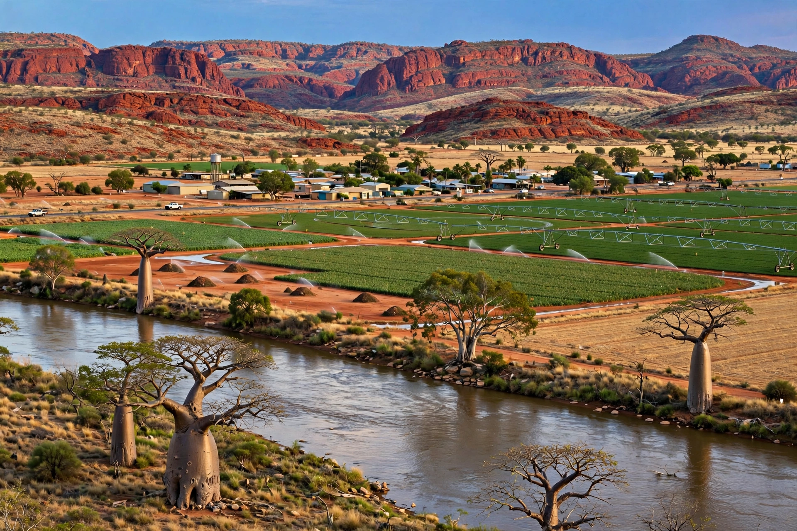

| Kununurra | |
|---|---|
 | |
| Country | Australia |
| State | Western Australia |
| Region | Kimberley |
| Population (2021) | 5,708 |
Kununurra is a town in far northern Western Australia, in the East Kimberley, close to the border with the Northern Territory. Its name derives from an Aboriginal word in the Miriwoong language meaning river or big water.
The town was established in the 1960s as the service centre for the Ord River Irrigation Area. Construction of the Ord River Diversion Dam created Lake Kununurra, and the later Ord Hydro power station supplies electricity. Kununurra replaced Wyndham as the regional centre.
Agriculture — mangoes, melons, sorghum, sandalwood and other irrigated crops — plus tourism. It is a gateway to Purnululu (Bungle Bungle), Lake Argyle, El Questro and Mirima National Park. East Kimberley Regional Airport connects it to Perth, Broome and Darwin.
Tropical savanna climate with a distinct wet season November–April and dry season, very hot summers.